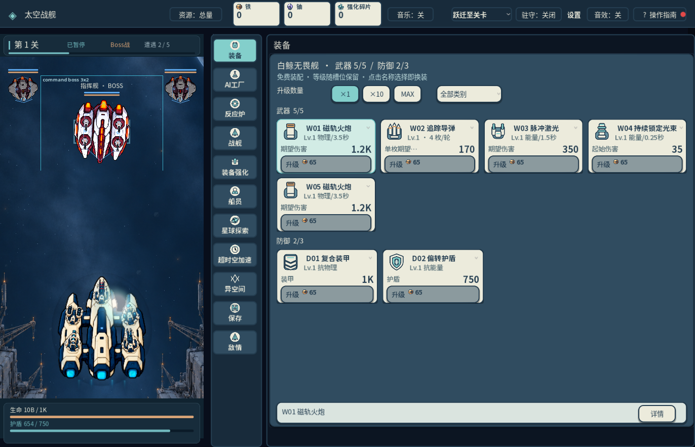
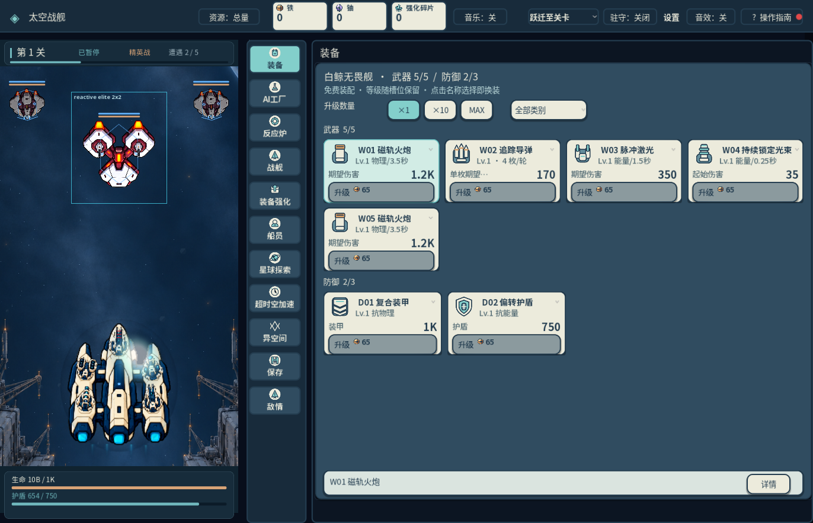

炮身原窗口前后对比
左：7b081cee 未验收版本。右：当前重画候选。均为真实 1372×883 原窗口 PNG，以 1 图片像素 = 1 CSS 像素显示；横向滚动查看。舰体和固定底座未改。
指挥 BOSS
修改前 · 7b081cee
当前候选 · 简洁宽炮管
反应精英
修改前 · 7b081cee
当前候选 · 简洁宽炮管
锚定精英
修改前 · 7b081cee当前候选 · 简洁宽炮管
锚定 BOSS
修改前 · 7b081cee当前候选 · 简洁宽炮管
反应 BOSS
修改前 · 7b081cee当前候选 · 简洁宽炮管
护盾精英
修改前 · 7b081cee当前候选 · 简洁宽炮管
护盾 BOSS
修改前 · 7b081cee当前候选 · 简洁宽炮管
指挥精英
修改前 · 7b081cee当前候选 · 简洁宽炮管